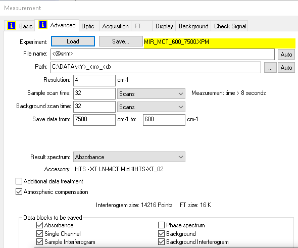
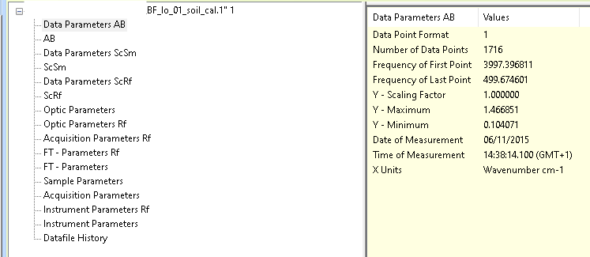

vignettes/opusreader2_introduction.Rmd
opusreader2_introduction.RmdSpectrometers from Bruker® Optics GmbH & Co. KG save spectra in a binary file format known as OPUS. Each OPUS file corresponds to one sample measurement, typically acquired through the OPUS spectroscopy software. These files feature numerical extensions, with extension numbers incrementing based on the naming scheme chosen in the OPUS software.
The OPUS suite and the file specification are proprietary, leading to the need for an implementation based on reverse engineering in this package. With {opusreader2}, you can access your spectroscopic data in the open computing language R, providing full control over your spectral data workflow. Our package specifically reads binary files for most Fourier-Transform Infrared (FT-IR) spectrometers from Bruker® Optics GmbH. While it may work for other products like Raman spectrometers, further adjustments are required to support new block types (data and parameters; see below).
The processing of each OPUS file begins by extracting essential information from a designated byte range in the file header. This section contains crucial details about binary blocks (also called chunks), including byte offsets, sizes, and data types within the file. The parsing algorithm utilizes this information to extract modular blocks of data and parameters from byte sequences. As illustrated in the figure below, the content of the files varies based on the instrument type, user-selected data (spectrum) blocks to save, and specific settings.

In addition to result spectra, the binary files encompass:
a comprehensive set of measurement parameters (configurations, conditions)
single-channel data from background measurements done before the sample
other types of intermediate spectra. Currently, we support “data blocks to be saved “ for fourier-transform infrared spectrometers.
With the main function read_opus() you can either read
single or multiple OPUS files. Let’s take an example file produced by a
Bruker ALPHA® spectrometer that measures mid-infrared spectra with a
diffuse-reflectance accessory. This spectral measurement of a soil
sample comes with the package and is also part of the data set in
Baumann et al. (2020). Here is how OPUS software represents parsed
blocks in the OPUS viewer software from Bruker®.

We can extract all those blocks from the corresponding OPUS file example. We can even explore additional blocks that are not visually displayed in the official software but are present in the file (more details below).
library("opusreader2")
# example file
file_1 <- system.file("extdata", "test_data", "BF_lo_01_soil_cal.1",
package = "opusreader2"
)
spectrum_1 <- read_opus(dsn = file_1)The dsn argument provides is the data source name. It is
currently either a character vector of the folder path to read files
from recursively, or character vector of specific OPUS file paths.
read_opus() returns a nested list of
class "list_opusreader2".
class(spectrum_1)
#> [1] "list_opusreader2" "list"
names(spectrum_1)
#> [1] "BF_lo_01_soil_cal.1"At the first level of the list output, data is arranged as shown in the Bruker OPUS viewer.
meas_1 <- spectrum_1[["BF_lo_01_soil_cal.1"]]
names(meas_1)
#> [1] "basic_metadata" "ab_no_atm_comp_data_param"
#> [3] "ab_no_atm_comp" "ab_data_param"
#> [5] "ab" "sc_sample_data_param"
#> [7] "sc_sample" "sc_ref_data_param"
#> [9] "sc_ref" "optics"
#> [11] "optics_ref" "acquisition_ref"
#> [13] "fourier_transformation_ref" "fourier_transformation"
#> [15] "sample" "acquisition"
#> [17] "instrument_ref" "instrument"
#> [19] "history"To gain insights into block names, associated data, and parameters,
we suggest consulting the help documentation via
?read_opus. We’ve formatted the block names in
camel_case within the second level of the
"opusreader2_list" output, facilitating improved
programmatic access.
Printing the complete "opusreader2_list" object in the R
console keeps the console occupied for a significant amount of time. For
more efficient examination in RStudio, we recommend using the list
preview feature with View(spectrum_1), accessible
through the Environment tab. Here we employ base R subsetting,
names(), and str() to explore examples of
measured spectral data.
This output reveals three list elements that may not be visible in the Bruker® viewer pane.
basic_metadata: This data frame serves as minimal
metadata to identify measurements. It contains the file name at time of
parsing, the sample name entered prior measurement, and different time
stamps. This field is for example useful to build data pipelines for
spectral libraries and prediction services.ab_no_atm_comp_data_param: Parameters for the
absorbance (AB) block prior to atmospheric compensation.ab_no_atm_comp:
str(meas_1$basic_metadata)
#> 'data.frame': 1 obs. of 6 variables:
#> $ dsn_filename : chr "BF_lo_01_soil_cal.1"
#> $ opus_sample_name : chr "BF_lo_01_soil_cal"
#> $ timestamp_string : chr "2015-11-06 14:39:33 GMT+1"
#> $ local_datetime : chr "2015-11-06 14:39:33"
#> $ local_timezone : chr "GMT+1"
#> $ utc_datetime_posixct: POSIXct, format: "2015-11-06 13:39:33"We can for example verify the frequency of the first point (FXV). All types of data and parameters within OPUS files are encoded with three capital letters each.
meas_1$ab_data_param$parameters$FXV$parameter_value
#> [1] 3997.397Besides the data or parameter values, the output of each parsed OPUS block contains the block type, channel type, text type, additional type, the offset in bytes, next offset in bytes, and the chunk size in bytes for particular data blocks. This is decoded from the file header and allows for traceability in the parsing process.
class(meas_1$ab_data_param)
#> [1] "parameter"
str(meas_1$ab_data_param)
#> List of 9
#> $ block_type : int 31
#> $ channel_type : int 16
#> $ text_type : int 0
#> $ additional_type: int 0
#> $ offset : int 33424
#> $ next_offset : int 33600
#> $ chunk_size : int 176
#> $ block_type_name: chr "ab_data_param"
#> $ parameters :List of 10
#> ..$ DPF:List of 4
#> .. ..$ parameter_name : chr "DPF"
#> .. ..$ parameter_name_long: chr "Data Point Format"
#> .. ..$ parameter_value : int 1
#> .. ..$ parameter_type : chr "int"
#> ..$ NPT:List of 4
#> .. ..$ parameter_name : chr "NPT"
#> .. ..$ parameter_name_long: chr "Number of Data Points"
#> .. ..$ parameter_value : int 1716
#> .. ..$ parameter_type : chr "int"
#> ..$ FXV:List of 4
#> .. ..$ parameter_name : chr "FXV"
#> .. ..$ parameter_name_long: chr "Frequency of First Point"
#> .. ..$ parameter_value : num 3997
#> .. ..$ parameter_type : chr "float"
#> ..$ LXV:List of 4
#> .. ..$ parameter_name : chr "LXV"
#> .. ..$ parameter_name_long: chr "Frequency of Last Point"
#> .. ..$ parameter_value : num 500
#> .. ..$ parameter_type : chr "float"
#> ..$ CSF:List of 4
#> .. ..$ parameter_name : chr "CSF"
#> .. ..$ parameter_name_long: chr "Y - Scaling Factor"
#> .. ..$ parameter_value : num 1
#> .. ..$ parameter_type : chr "float"
#> ..$ MXY:List of 4
#> .. ..$ parameter_name : chr "MXY"
#> .. ..$ parameter_name_long: chr "Y - Maximum"
#> .. ..$ parameter_value : num 1.47
#> .. ..$ parameter_type : chr "float"
#> ..$ MNY:List of 4
#> .. ..$ parameter_name : chr "MNY"
#> .. ..$ parameter_name_long: chr "Y - Minimum"
#> .. ..$ parameter_value : num 0.104
#> .. ..$ parameter_type : chr "float"
#> ..$ DAT:List of 4
#> .. ..$ parameter_name : chr "DAT"
#> .. ..$ parameter_name_long: chr "Date of Measurement"
#> .. ..$ parameter_value : chr "06/11/2015"
#> .. ..$ parameter_type : chr "str"
#> ..$ TIM:List of 4
#> .. ..$ parameter_name : chr "TIM"
#> .. ..$ parameter_name_long: chr "Time of Measurement"
#> .. ..$ parameter_value : chr "14:38:14.100 (GMT+1)"
#> .. ..$ parameter_type : chr "str"
#> ..$ DXU:List of 4
#> .. ..$ parameter_name : chr "DXU"
#> .. ..$ parameter_name_long: chr "X Units"
#> .. ..$ parameter_value : chr "WN"
#> .. ..$ parameter_type : chr "str"
#> - attr(*, "class")= chr "parameter"
str(meas_1$instrument)
#> List of 9
#> $ block_type : int 32
#> $ channel_type : int 0
#> $ text_type : int 0
#> $ additional_type: int 64
#> $ offset : int 26160
#> $ next_offset : int 26560
#> $ chunk_size : int 400
#> $ block_type_name: chr "instrument"
#> $ parameters :List of 27
#> ..$ HFL:List of 4
#> .. ..$ parameter_name : chr "HFL"
#> .. ..$ parameter_name_long: chr "Hight Folding Limit"
#> .. ..$ parameter_value : num 16707
#> .. ..$ parameter_type : chr "float"
#> ..$ LFL:List of 4
#> .. ..$ parameter_name : chr "LFL"
#> .. ..$ parameter_name_long: chr "Low Folding Limit"
#> .. ..$ parameter_value : num 0
#> .. ..$ parameter_type : chr "float"
#> ..$ LWN:List of 4
#> .. ..$ parameter_name : chr "LWN"
#> .. ..$ parameter_name_long: chr "Laser Wavenumber"
#> .. ..$ parameter_value : num 11602
#> .. ..$ parameter_type : chr "float"
#> ..$ ABP:List of 4
#> .. ..$ parameter_name : chr "ABP"
#> .. ..$ parameter_name_long: chr "Absolute Peak Pos in Laser*2"
#> .. ..$ parameter_value : int 999951
#> .. ..$ parameter_type : chr "int"
#> ..$ SSP:List of 4
#> .. ..$ parameter_name : chr "SSP"
#> .. ..$ parameter_name_long: chr "Sample Spacing Divisor"
#> .. ..$ parameter_value : int 1
#> .. ..$ parameter_type : chr "int"
#> ..$ HUM:List of 4
#> .. ..$ parameter_name : chr "HUM"
#> .. ..$ parameter_name_long: chr "Relative Humidity Interferometer"
#> .. ..$ parameter_value : int 25
#> .. ..$ parameter_type : chr "int"
#> ..$ RSN:List of 4
#> .. ..$ parameter_name : chr "RSN"
#> .. ..$ parameter_name_long: chr "Running Sample Number"
#> .. ..$ parameter_value : int 1891
#> .. ..$ parameter_type : chr "int"
#> ..$ SRT:List of 4
#> .. ..$ parameter_name : chr "SRT"
#> .. ..$ parameter_name_long: chr "Start time (sec)"
#> .. ..$ parameter_value : num 1.45e+09
#> .. ..$ parameter_type : chr "float"
#> ..$ DUR:List of 4
#> .. ..$ parameter_name : chr "DUR"
#> .. ..$ parameter_name_long: chr "Scan time (sec)"
#> .. ..$ parameter_value : num 79.6
#> .. ..$ parameter_type : chr "float"
#> ..$ TSC:List of 4
#> .. ..$ parameter_name : chr "TSC"
#> .. ..$ parameter_name_long: chr "Scanner Temperature"
#> .. ..$ parameter_value : num 33.7
#> .. ..$ parameter_type : chr "float"
#> ..$ MVD:List of 4
#> .. ..$ parameter_name : chr "MVD"
#> .. ..$ parameter_name_long: chr "Max. Velocity Deviation"
#> .. ..$ parameter_value : num 1.56
#> .. ..$ parameter_type : chr "float"
#> ..$ APG:List of 4
#> .. ..$ parameter_name : chr "APG"
#> .. ..$ parameter_name_long: chr "Actual preamplifier gain"
#> .. ..$ parameter_value : num 1
#> .. ..$ parameter_type : chr "float"
#> ..$ HUA:List of 4
#> .. ..$ parameter_name : chr "HUA"
#> .. ..$ parameter_name_long: chr "Absolute Humidity Interferometer"
#> .. ..$ parameter_value : num 9.52
#> .. ..$ parameter_type : chr "float"
#> ..$ VSN:List of 4
#> .. ..$ parameter_name : chr "VSN"
#> .. ..$ parameter_name_long: chr "Firmware version"
#> .. ..$ parameter_value : chr "1.352 Dec 04 2012"
#> .. ..$ parameter_type : chr "str"
#> ..$ SRN:List of 4
#> .. ..$ parameter_name : chr "SRN"
#> .. ..$ parameter_name_long: chr "Instrument Serial Number"
#> .. ..$ parameter_value : chr "2 00639"
#> .. ..$ parameter_type : chr "str"
#> ..$ PKA:List of 4
#> .. ..$ parameter_name : chr "PKA"
#> .. ..$ parameter_name_long: chr "Peak Amplitude"
#> .. ..$ parameter_value : int -438
#> .. ..$ parameter_type : chr "int"
#> ..$ PKL:List of 4
#> .. ..$ parameter_name : chr "PKL"
#> .. ..$ parameter_name_long: chr "Peak Location"
#> .. ..$ parameter_value : int 7518
#> .. ..$ parameter_type : chr "int"
#> ..$ GFW:List of 4
#> .. ..$ parameter_name : chr "GFW"
#> .. ..$ parameter_name_long: chr "Number of Good FW Scans"
#> .. ..$ parameter_value : int 32
#> .. ..$ parameter_type : chr "int"
#> ..$ BFW:List of 4
#> .. ..$ parameter_name : chr "BFW"
#> .. ..$ parameter_name_long: chr "Number of Bad FW Scans"
#> .. ..$ parameter_value : int 0
#> .. ..$ parameter_type : chr "int"
#> ..$ PRA:List of 4
#> .. ..$ parameter_name : chr "PRA"
#> .. ..$ parameter_name_long: chr "Backward Peack Amplitude"
#> .. ..$ parameter_value : int -437
#> .. ..$ parameter_type : chr "int"
#> ..$ PRL:List of 4
#> .. ..$ parameter_name : chr "PRL"
#> .. ..$ parameter_name_long: chr "Backward Peak Location"
#> .. ..$ parameter_value : int 7518
#> .. ..$ parameter_type : chr "int"
#> ..$ GBW:List of 4
#> .. ..$ parameter_name : chr "GBW"
#> .. ..$ parameter_name_long: chr "Number of Good BW Scans"
#> .. ..$ parameter_value : int 32
#> .. ..$ parameter_type : chr "int"
#> ..$ BBW:List of 4
#> .. ..$ parameter_name : chr "BBW"
#> .. ..$ parameter_name_long: chr "Number of Bad BW Scans"
#> .. ..$ parameter_value : int 0
#> .. ..$ parameter_type : chr "int"
#> ..$ INS:List of 4
#> .. ..$ parameter_name : chr "INS"
#> .. ..$ parameter_name_long: chr "Instrument Type"
#> .. ..$ parameter_value : chr "Alpha"
#> .. ..$ parameter_type : chr "str"
#> ..$ FOC:List of 4
#> .. ..$ parameter_name : chr "FOC"
#> .. ..$ parameter_name_long: chr "Focal Length"
#> .. ..$ parameter_value : num 33
#> .. ..$ parameter_type : chr "float"
#> ..$ RDY:List of 4
#> .. ..$ parameter_name : chr "RDY"
#> .. ..$ parameter_name_long: chr "Ready Check"
#> .. ..$ parameter_value : chr "1"
#> .. ..$ parameter_type : chr "str"
#> ..$ ASS:List of 4
#> .. ..$ parameter_name : chr "ASS"
#> .. ..$ parameter_name_long: chr "Number of Sample Scans"
#> .. ..$ parameter_value : int 64
#> .. ..$ parameter_type : chr "int"
#> - attr(*, "class")= chr "parameter"The first example mid-infrared spectrum was measured with atmospheric compensation (carbon dioxide and water bands), which is done on based on the background spectra. The measurement option is called “Atmospheric compensation” in the OPUS software. The goal of this routine is to remove artefacts from CO2 and water bands in the measurement module. Generally, OPUS files have trace every step or macro applied in the file output. Reading both raw and transformed data gives us flexibility and the possibility to do extended quality control prior to further data processing, modeling, and estimating new samples.
A data source name (dsn) can be a folder, too. This
makes it convenient to read all OPUS files located below a certain
folder level. We illustrate it with all OPUS test files that come with
{opusreader2}, which are are also used in unit tests.
test_dsn <- system.file("extdata", "test_data", package = "opusreader2")
data_test <- read_opus(dsn = test_dsn)
names(data_test)
#> [1] "617262_1TP_C-1_A5.0" "629266_1TP_A-1_C1.0" "BF_lo_01_soil_cal.1"
#> [4] "MMP_2107_Test1.001" "test_spectra.0"We can get the instrument name of the test files like this.
get_instrument_name <- function(data) {
return(data$instrument$parameters$INS$parameter_value)
}
lapply(data_test, get_instrument_name)
#> $`617262_1TP_C-1_A5.0`
#> [1] "INVENIO-R"
#>
#> $`629266_1TP_A-1_C1.0`
#> [1] "VERTEX 70"
#>
#> $BF_lo_01_soil_cal.1
#> [1] "Alpha"
#>
#> $MMP_2107_Test1.001
#> [1] "Tango"
#>
#> $test_spectra.0
#> [1] "TENSOR II"For single OPUS files, there read_opus_single()
implementation can also be used
data_single <- read_opus_single(dsn = file_1)